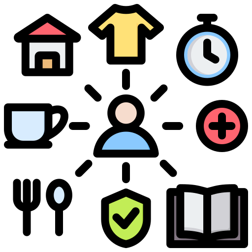

Nuestra empresa ofrece servicios meteorológicos avanzados utilizando tecnología de vanguardia. Obtén pronósticos precisos y soluciones personalizadas para tus necesidades.

En TempoTech, no solo pronosticamos el clima; forjamos un vínculo entre la tecnología y la naturaleza para brindarte una experiencia meteorológica sin igual. Únete a nosotros en este viaje hacia la excelencia meteorológica.
|
En TempoTech, nos dedicamos a brindar servicios meteorológicos avanzados que van más allá de las expectativas convencionales. Nuestra firma crece con la creencia fundamental de que la tecnología puede llevar la predicción del clima a nuevas alturas, proporcionando a nuestros clientes una comprensión más profunda y precisa de lo que el futuro meteorológico les depara. |
|
|
En el corazón de TempoTech se encuentra la tecnología de vanguardia que impulsa nuestros servicios meteorológicos. Utilizamos algoritmos sofisticados y datos en tiempo real para ofrecer pronósticos precisos y confiables. La precisión es nuestro compromiso, y cada detalle cuenta cuando se trata de brindarte información meteorológica confiable. |
|
|  |
Entendemos que cada cliente tiene necesidades meteorológicas específicas. Ya sea que estés planificando eventos al aire libre, gestionando operaciones agrícolas o simplemente planificando tu día a día, en TempoTech te ofrecemos soluciones personalizadas. Nuestro equipo de expertos está listo para adaptar nuestros servicios a tus requerimientos individuales. |